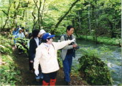
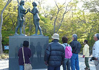
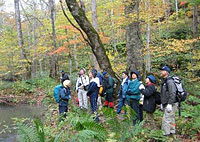

[徒歩]
焼山～子ノ口（全区間） 約5時間 約14km
石ヶ戸～子ノ口（見所区間） 約2時間半 約9km
自然ボランティアガイド
十和田湖奥入瀬観光ボランティアの会
楽しい旅のお手伝いがしたいという住民が集まり美化協力や観光案内をしています。
ガイドは農家の方がほとんどで年代も様々。ふるさとの言葉でふるさとを紹介するふるさとの香りと味わいが魅力です。
『ろまん隊の活動』
…道の駅「おいらせ」での観光案内、各種イベントへの協力、渓流清掃をしています。
『一緒に歩き隊』
…ろまん隊の活動に加え、奥入瀬渓流の案内をしています。
|  |
〒034-0302 十和田市大字沢田字水尻84-1（田中方）
|
十和田湖自然ガイドクラブ
十和田湖に宿泊される観光客の皆さまに対し、湖畔の日々変化する自然や乙女の像、十和田神社などを地元在住のガイドが、毎日早朝1時間案内しています。観光客の皆さまとともに自然の美しさを感動し合い、先人の残した文化遺産を偲び、国立公園のすばらしさや保護意識を高めたいと考えています。
|  |
〒018-5501 十和田市大字奥瀬字十和田486番地
（吉崎方）
|
十和田・奥入瀬・八甲田エコツアーガイドクラブ
十和田八幡平国立公園の十和田湖・奥入瀬渓流・八甲田山を中心に、国立公園の美しい風景鑑賞、多様な生き物観察、自然保護の啓発などをとおし、自然にやさしい国立公園の利用を目指したエコツアーをサポートします。
当財団は、10年にわたり様々な自然観察会を催しており、その中から代表的なメニューを選別し、経験豊かなガイド約10名が自然解説や登山ガイドなどをします。
|  | 十和田・奥入瀬・八甲田エコツアークラブ事務局
|